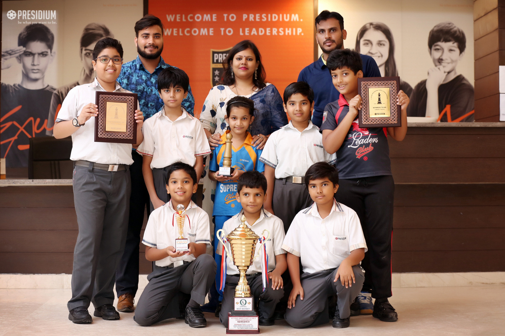

Campus Life
Sports Area
This is the area where we play different sports
Presidium believes that academic learning and sports complement each other. The institution follows a comprehensive educational approach that includes sports as an important pillar of education. Sports are an important contributor in developing the overall personality of students. Other than sportsmanship, it promotes the qualities of leadership, sharing, team spirit and tolerance in students. It teaches the value of time and how it is important to note how a single minute can decide the fate of a young sportsmen in the field of competition. At Presidium, we believe in fostering sportsmanship and athletic excellence in our students and thus, several sports competitions are organized every year.
Library
This is the area where we read differenet books.
“Libraries allow children to ask questions about the world and find the answers. And the wonderful thing is that once a child learns to use a library, the doors to learning are always open.”
A treasure trove and storehouse of knowledge, a library is a place to learn, think and share ideas.
Presidium has provided students with a library architecture that is inspirational and conducive to learning, improved communication and interaction.
To fire Presidians’ imagination and keeping the access easy, computers have been incorporated in the library so that a world of knowledge is readily available to students.
Computer Lab
This is the area where we explore the world of computers.
Dull classrooms with just furniture and a blackboard is not what you will see in Presidium classes. The classrooms are designed in a way that fosters excellence and motivates students towards better performance. Each classroom is aesthetically designed and integrated with smart boards to make both the learning and teaching interactive. With technological support, our skilled teachers provide guidance to each individual.
Achievements
Achievements

A grand chess tournament was organized by Presidium wherein students of Grade 4 to 6 from all branches participated. Hosted by Presidium IP on 9th October-2013, this inter branch chess competition was inaugurated by the AcademicDirector, Mr. M.V. Kumar. The young Presidians displayed a commendableperformance which led to an enthralling tournament. Although every student showcased their best abilities, the Presidians of IndiraPuram branch had an edge over others which made them win the Champion trophy. The runner up trophy was bagged by Presidium Ashok Vihar. It was a magnificent event conducted by the Big League Academy which every student and teacher, who was a part of it, participated with high spirits and enthusiasm.
.jpg)
Our champions from Presidium, Dwarka 16B, made all of us proud by winning the overall Championship Trophy at Interschool Athletics and Yoga Championship, organized by BSMG (Bharat Sports Management Group), on 15th February at CWG Sports Complex, Akshardham. Around 180 students from 10 different schools participated in the event. Our talented Presidians impressed everyone with their tremendous energy, enthusiasm and sportsmanship. They won 8 Gold, 4 Silver and 4 Bronze medals in Athletics, and 6 Gold, 3 Silver and 4 Bronze medals in Yoga. We are proud of them!
Achievements
A grand chess tournament was organized by Presidium wherein students of Grade 4 to 6 from all branches participated. Hosted by Presidium IP on 9th October-2013, this inter branch chess competition was inaugurated by the AcademicDirector, Mr. M.V. Kumar. The young Presidians displayed a commendableperformance which led to an enthralling tournament. Although every student showcased their best abilities, the Presidians of IndiraPuram branch had an edge over others which made them win the Champion trophy. The runner up trophy was bagged by Presidium Ashok Vihar. It was a magnificent event conducted by the Big League Academy which every student and teacher, who was a part of it, participated with high spirits and enthusiasm.
Our champions from Presidium, Dwarka 16B, made all of us proud by winning the overall Championship Trophy at Interschool Athletics and Yoga Championship, organized by BSMG (Bharat Sports Management Group), on 15th February at CWG Sports Complex, Akshardham. Around 180 students from 10 different schools participated in the event. Our talented Presidians impressed everyone with their tremendous energy, enthusiasm and sportsmanship. They won 8 Gold, 4 Silver and 4 Bronze medals in Athletics, and 6 Gold, 3 Silver and 4 Bronze medals in Yoga. We are proud of them!